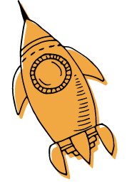

Bundestagswahl 2021
Der Wahlkompass macht Digitalbezug der Parteiprogramme sichtbar. Navigieren Sie durch die Orginatexte mithilfe von Schlagworten. .
707 Seiten Wahlprogramme werden geladen…
Wahlkompass Digitales
Der Wahlkompass Digitales schafft Transparenz im Wahlkampf und zeigt, welche Antworten die deutschen Parteien auf die digitalpolitischen Fragen haben. Ein Forschungsteam unter Leitung des HIIG Alexander von Humboldt Institut für Internet und Gesellschaft hat die Programme der Parteien auf deren Stellungnahmen zu Digitalpolitik in unterschiedlichen Bereichen untersucht.
Creative Commons Lizenzvertrag
Der Wahlkompass Digitales ist lizenziert unter einer Creative Commons Attribution-ShareAlike 4.0 Unported License (CC BY-SA 4.0 DE). Bei Nutzung der Daten und Inhalte des Wahlkompasses Digitales erwarten wir eine Erwähnung.
Impressum
Eine Initiative des Alexander von Humboldt Institut für Internet und Gesellschaft gGmbH
Französische Straße 9, 10117 Berlin · +49 30 200 760 82 · frederik.efferenn@hiig.de· www.hiig.de
Vollständiges Impressum auf hiig.de
Projektpartner
Leibniz-Zentrum für Medienforschung | Hans-Bredow-Institut
Digital Business University of Applied Science (DBU)
Gestaltung: Larissa Wunderlich
Weitere Informationen
Zielstellung
Der Wahlkompass Digitales hat auch für die Bundestagswahl 2021 ein eindeutiges erklärtes Ziel: Er möchte aufklären und Originaltext mit Digitalbezug in den Programmen der Parteien sichtbar machen. Das Humboldt Institut für Internet und Gesellschaft (HIIG) möchte weder beratend in die Wahl eingreifen, noch möchte es wertend mit den Texten umgehen. Das Wahlkompass-Team hat mit bestem Wissen und gewissen jene Textstellen herausgesucht, die einen direkten Bezug zu unseren Forschungsthemen haben. Einen Anspruch auf Vollkommenheit erheben wir dabei nicht. Sollten Sie einen Fehler finden oder eine Anregung haben, wenden Sie sich gerne an Moritz Timm (moritz.timm@hiig.de). Wir wünschen viel Vergnügen mit dem Kompass und hoffen, dass er unseren Nutzer:innen eine schnellen und komfortablen Zugang zu jenen Textstellen in den Programmen gibt, die eine digitale Relevanz haben.
Funktionsweise
Fünf der unten stehenden Labels (Themen) können ausgewählt werden. Weiter unten können zwei Parteipgrogramme selektiert, parallel angezeigt und verglichen werden. Die Zahlen in den farbigen Kästchen neben den Parteinamen stehen für die Häufigkeit der Nennungen der Labels in den jeweiligen Programmen. Ein Klick auf die jeweiligen Kästchen lässt Sie zur nächsten Textstelle springen.
Methodik und Datenanalyse
Was sind Digitalthemen?
Unter Digitalthemen verstehen wir alle Themen, die von den untersuchten Parteien in einen Zusammenhang mit der Digitalisierung gestellt werden. Dazu gehören vor allem Institutionen und Prozesse, die digitalisiert werden, wie die öffentliche Verwaltung, Wirtschaft und Arbeit, Bildung und Forschung, aber auch die Partizipation. Digitale Technologien und Infrastrukturen zählen ebenso zu Digitalthemen.
Welche Parteien wurden untersucht?
Es wurden jene Parteien untersucht, für welche im Wahlkampf 2021 konstant ein Stimmenanteil von über 5% prognostiziert wurde.
Wie wurden Kategorien und Labels erstellt und zugeordnet?
Die Kategorien und Labels basieren auf dem Wahlkompass Digitales 2017 und wurden anhand der aktuellen Wahlprogramme weiterentwickelt. Mithilfe dieser Labels wurden die Wahlprogramme 2021 qualitativ analysiert und satzweise kodiert.
Wer hat die Kategorien und Labels erstellt und zugeordnet?
Die qualitative Inhaltsanalyse und die Kodierung haben Forscher:innen des HIIG sowie des HBI durchgeführt, in deren Forschungsgebiet die betreffenden Themen liegen. Die Einbindung der Daten wurde von der DBU vorgenommen.
Haben Sie noch weitere Fragen zum Wahlkompass Digitales?
Schicken Sie Ihre Fragen und Anregungen an Projektleiter Moritz Timm.